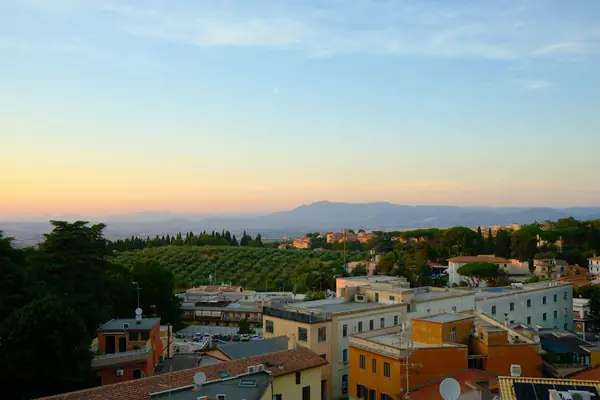

Home › Wine regions › Lazio
Lazio wine region

Photo: Nensi Patel on Unsplash
Easy Roman whites and local reds.
Vines grow in all 20 regions. Wines are classed DOCG, DOC and IGT.
Notable producers in Lazio
- Casale del Giglio
- Falesco
- Poggio Le Volpi
- Castel de Paolis
- Sergio Mottura
Official appellations
| Appellation | Status | Style | Grapes |
|---|---|---|---|
| Cannellino di Frascati (2011) Sweet white from the Frascati zone in the volcanic Castelli Romani hills south-east of Rome, covering Frascati, Grottaferrata, Monte Porzio Catone and parts of Rome and Montecompatri. At least 70% Malvasia (di Candia and/or del Lazio) with Bellone, Bombino, Greco and Trebbiano, from grapes picked late and overripe. Good to know: 'cannellino' was the old local name for the semi-sweet Frascati drunk in Roman taverns. | DOCG | Sweet | Malvasia, Trebbiano |
| Cesanese del Piglio (2008) Red from Piglio, Serrone and parts of Acuto, Anagni and Paliano in Frosinone province, on hilly red volcanic and limestone soils south-east of Rome. At least 90% Cesanese (di Affile and/or Comune), giving spicy, cherry-scented reds, with longer-aged Superiore and Riserva versions. Good to know: it became Lazio's first DOCG in 2008 and its only red one. | DOCG | Red | Cesanese |
| Frascati Superiore (2011) Upper tier of Frascati from the volcanic Castelli Romani hills south-east of Rome, the same zone as Cannellino di Frascati. At least 70% Malvasia (di Candia and/or del Lazio), the rest Bellone, Bombino, Greco or Trebbiano, with lower yields and higher alcohol than the plain DOC; the Riserva needs 12 months' ageing including 3 in bottle. Good to know: the basic dry and spumante wines stay under Frascati DOC. | DOCG | White | Malvasia, Trebbiano |
| Aleatico di Gradoli Sweet red Aleatico near Lake Bolsena. | DOC | Sweet | Aleatico |
| Aprilia Plains DOC south of Rome. | DOC | White, Red | Trebbiano, Merlot, Sangiovese |
| Atina Bordeaux-variety reds from the Comino valley. | DOC | Red | Cabernet Sauvignon |
| Bianco Capena Whites north of Rome. | DOC | White | Malvasia, Trebbiano |
| Castelli Romani Volcanic hills south-east of Rome. | DOC | White, Red | Malvasia, Trebbiano |
| Cerveteri Coastal DOC near the Etruscan town. | DOC | White, Red | Trebbiano, Sangiovese, Montepulciano |
| Cesanese di Affile Cesanese from Affile. | DOC | Red | Cesanese |
| Cesanese di Olevano Romano Cesanese from Olevano Romano. | DOC | Red | Cesanese |
| Circeo Coastal DOC near Monte Circeo. | DOC | White, Red | Trebbiano, Merlot |
| Colli Albani Volcanic hills near Lake Albano. | DOC | White | Malvasia, Trebbiano |
| Colli della Sabina Sabina hills north-east of Rome. | DOC | White, Red | Sangiovese, Trebbiano |
| Colli Etruschi Viterbesi Tuscia: hills around Viterbo. | DOC | White, Red | Sangiovese, Trebbiano |
| Colli Lanuvini Castelli Romani DOC near Lanuvio. | DOC | White, Red | Malvasia, Trebbiano |
| Cori Native Bellone and Nero Buono near Latina. | DOC | White, Red | Bellone, Nero Buono |
| Est! Est!! Est!!! di Montefiascone (1966) Famous for its name and legend: whites from above Lake Bolsena. | DOC | White | Trebbiano, Malvasia |
| Frascati (1966) Rome's classic white from the volcanic Castelli Romani. | DOC | White | Malvasia, Trebbiano |
| Genazzano Small DOC east of Rome. | DOC | White, Red | Malvasia, Sangiovese |
| Marino Castelli Romani white. | DOC | White | Malvasia, Trebbiano |
| Montecompatri Colonna Castelli Romani white. | DOC | White | Malvasia, Trebbiano |
| Moscato di Terracina Dry to sweet Moscato on the coast near Terracina. | DOC | White, Sweet | Moscato di Terracina |
| Nettuno Coastal DOC with native Bellone (Cacchione). | DOC | White, Red | Bellone, Sangiovese |
| Roma Province-wide DOC for Rome since 2011. | DOC | White, Red | Malvasia, Montepulciano, Cesanese |
| Tarquinia Coastal DOC north of Rome. | DOC | White, Red | Trebbiano, Sangiovese |
| Velletri Castelli Romani DOC. | DOC | White, Red | Malvasia, Montepulciano |
| Vignanello Hills near Viterbo. | DOC | White, Red | Sangiovese, Greco |
| Zagarolo Tiny Castelli Romani white DOC. | DOC | White | Malvasia, Trebbiano |
Lazio wines to try
Fontana Candida Frascati Superiore Secco
Lazio · Frascati · Malvasia, Trebbiano
Easy-going Roman white: lemon, apple, almond and a fresh finish.
Food: Carbonara, fried artichokes, light starters
Falesco Montiano
Velvety Merlot of plum, black cherry and mocha with a fresh, sapid finish from volcanic soils near Lake Bolsena.
Food: Saltimbocca alla romana
More wine regions in Italy
TuscanyPiedmontVenetoSicilyAosta ValleyLombardyTrentino-Alto AdigeFriuli-Venezia GiuliaLiguriaEmilia-RomagnaUmbriaMarcheAbruzzoMoliseCampaniaPugliaBasilicataCalabriaSardinia
The Wine Reference newsletter
New wines, stories and career guides, one email a week at most.
Over 18s only. Unsubscribe any time with one click. Your email is stored securely by Kit and never shared.
Support The Wine Reference
This guide is free, with no paywall. If it helped you choose a bottle, you can buy me a glass and keep it growing.
🍷 Buy me a glass